ALFIN. RA
Full Stack Developer
& Prompt Engineer
Membangun aplikasi web berskala besar menggunakan teknologi modern.
Mari KolaborasiDi luar baris kode dan algoritma kompleks, saya adalah seseorang yang menyukai kreativitas, estetika visual, dan selalu haus untuk mempelajari hal baru setiap harinya.
Keseharian saya sering dihabiskan dengan meracik prompt AI untuk bereksperimen, merancang antarmuka masa depan, atau sekadar menikmati keheningan sambil memecahkan bug membandel.
Jelajahi Karya Saya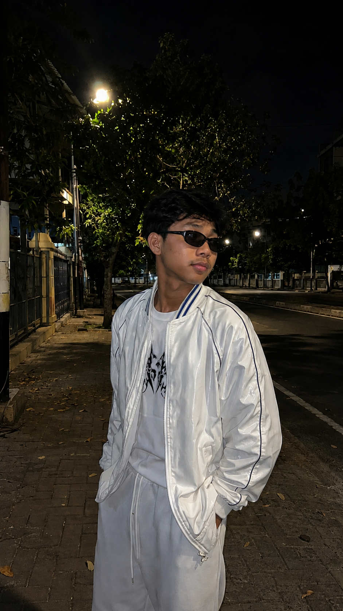
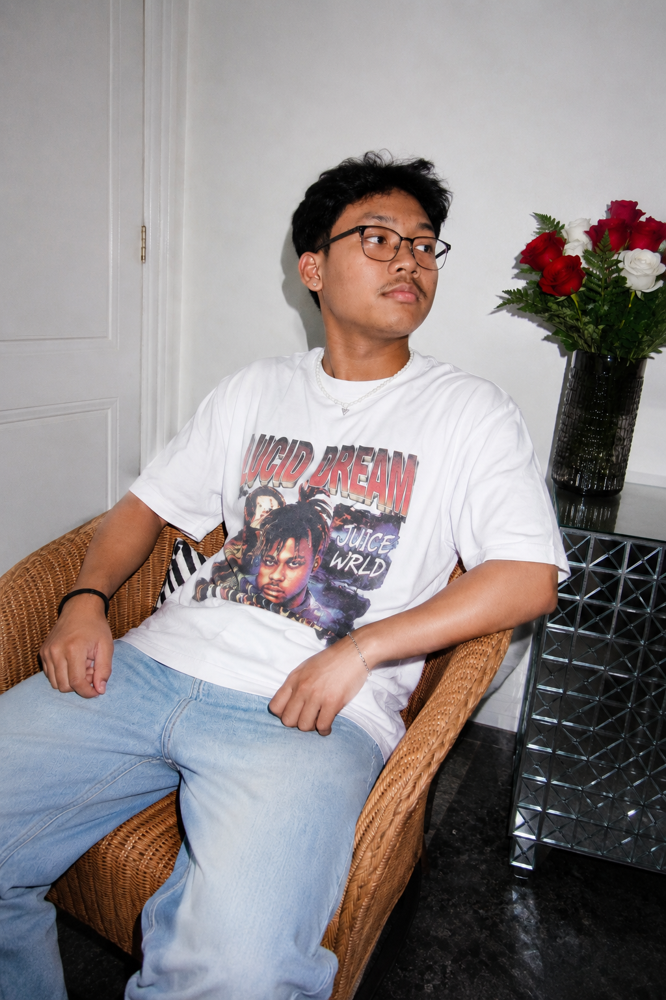
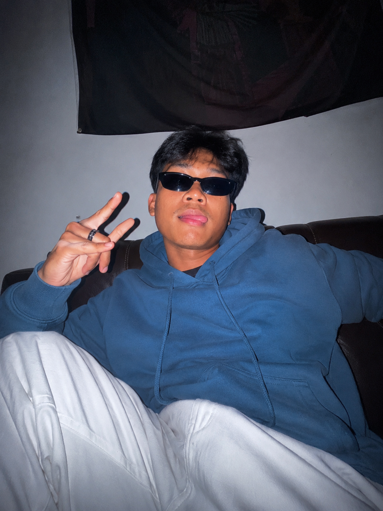
Ketekunan, disiplin, dan kerja sama tim tidak hanya saya terapkan di depan layar. Melalui pencapaian di bidang olahraga dan pengalaman terpilih sebagai Pasukan Pengibar Bendera Pusaka (Paskibraka), saya tertempa untuk memiliki fisik yang kuat, mental pantang menyerah di bawah tekanan tinggi, serta jiwa kepemimpinan yang solid.
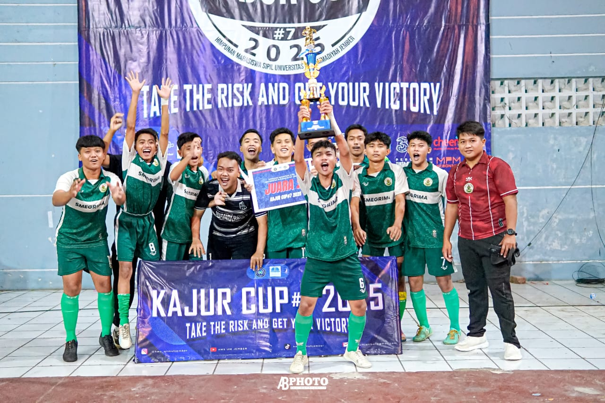
Kerja Sama Tim
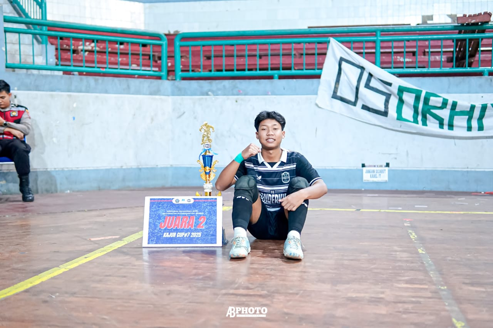
Aksi Lapangan
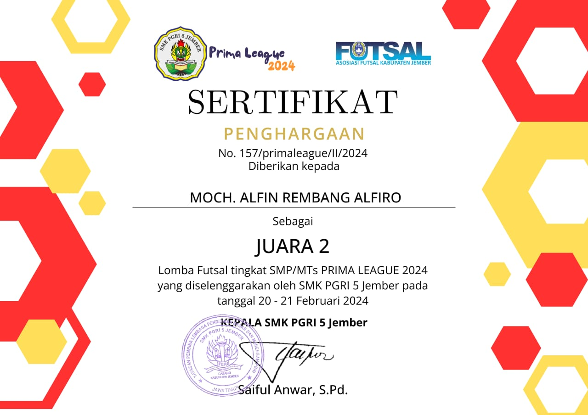
Juara 2 Futsal
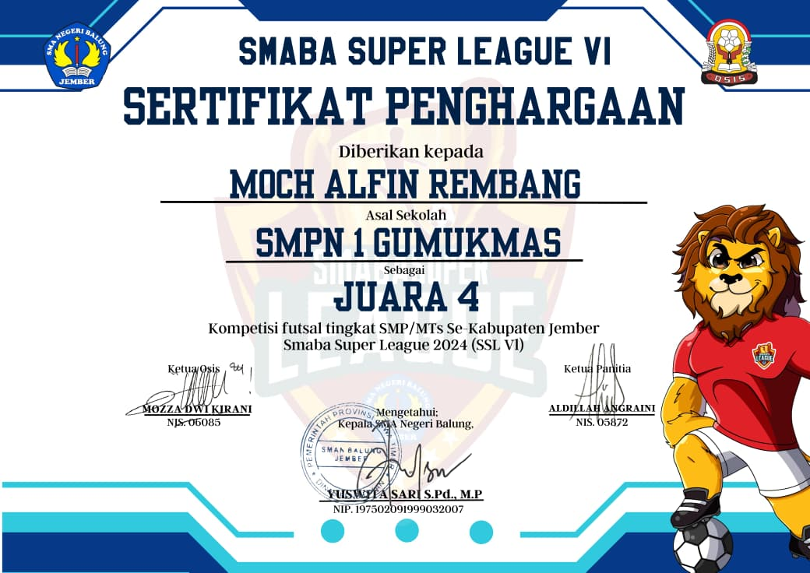
Juara 4 Futsal
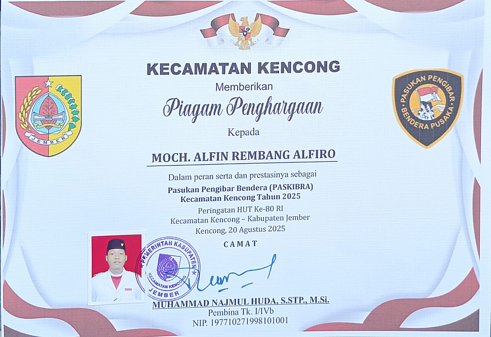
Pencapaian Paskibraka
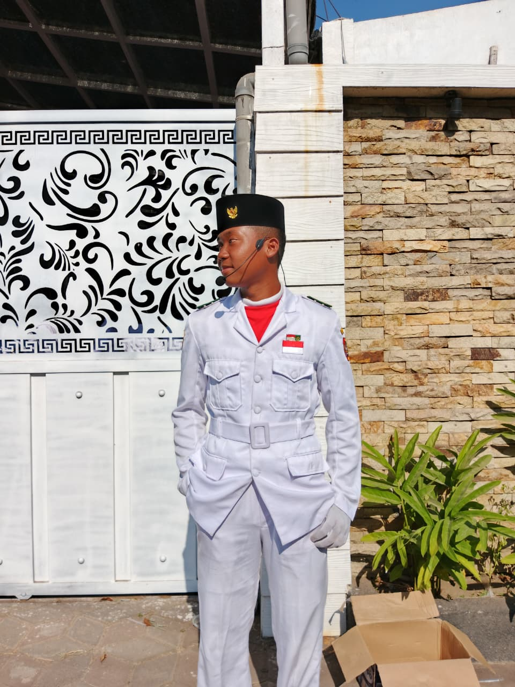
Dedikasi & Disiplin
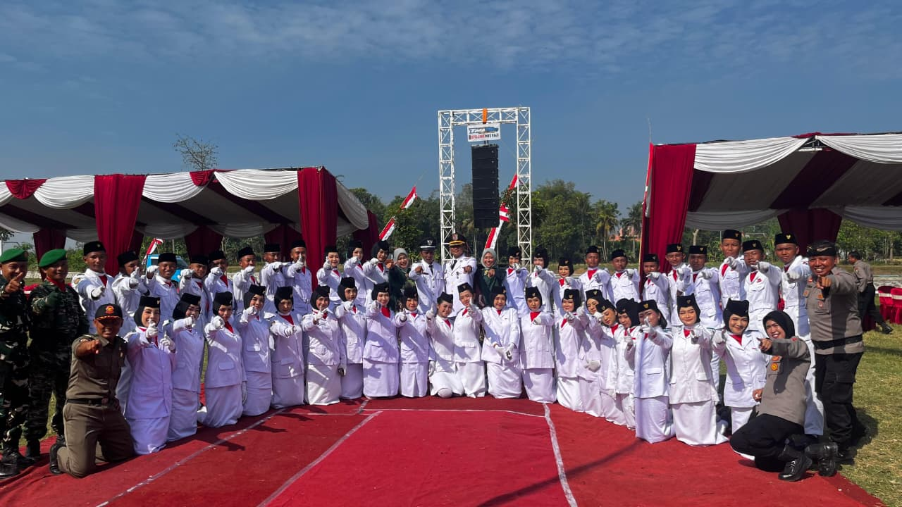
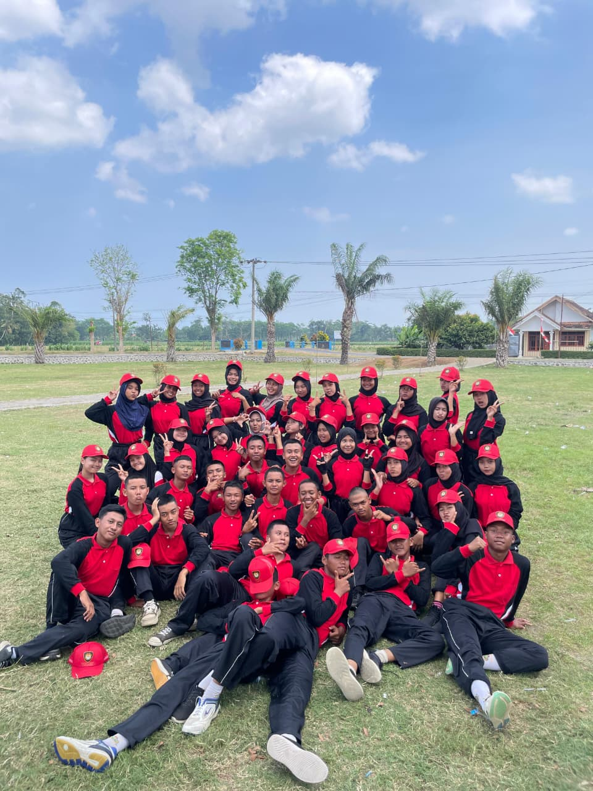
Semangat Tim
Pilihan aplikasi full-stack, integrasi AI, dan eksperimen teknis terbaru saya.
Media pusat untuk berita lokal indonesia, menjadi rumah atau wadah untuk berita berita yang ada di indonesia di tampilkan menggunakan sebuah link rss menggunakan teknologi yang modern agar bisa menampilkan berita berita dari berbagai portal berita raksasa yang ada di indonesia.
Kumpulan alat dan teknologi andalan saya untuk membangun aplikasi web performa tinggi dan solusi berbasis AI.
Perjalanan profesional saya dalam dunia pengembangan web dan kecerdasan buatan.